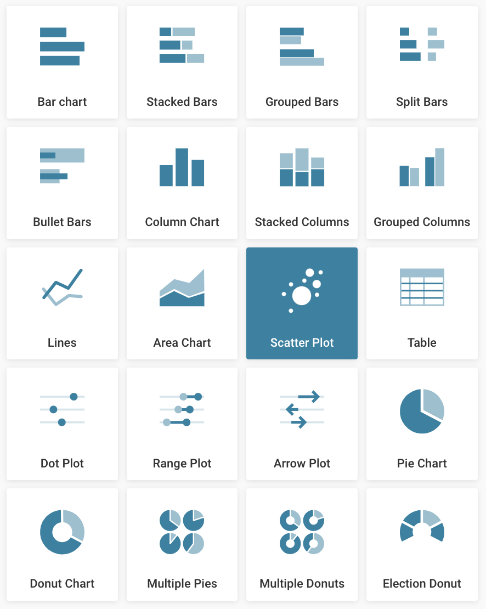
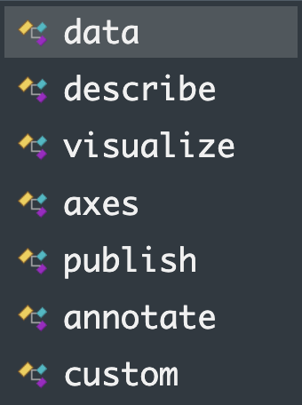

Cómo conectar R con Datawrapper
¿Quién soy?
¿Qué es Datawrapper?
Herramienta de visualización que permite diseñar de forma sencilla gráficos interactivos embebibles
Se ha convertido en referencia en medios de comunicación por su facilidad de uso
Tiene una API y un paquete de R para interactuar con ella
¿Por qué conectar Datawrapper y R?
Incluir pronto en el proceso la herramienta donde se verá el producto final.
Agilidad a la hora de elegir qué contar y cómo transformar los datos para contarlo.
Por encima de todo: AUTOMATIZACIÓN
¿Cómo lo conectamos con R?
Podemos usar la librería DatawRappr desarrollada por Benedict Witzenberger.
En la página de Github podéis encontrar detalles sobre las funciones del paquete, para todo lo demás podemos usar directamente la API de Datawrapper.

¿Qué podemos hacer?
Crear carpetas y gráficos
Actualizar sus datos
Personalizarlos
Publicarlos (y republicarlos)
Exportarlos
Antes de empezar
Crear una cuenta en Datawrapper, es gratis.
Crear un token dentro de la cuenta. Será nuestro id para conectar a través de la API.
Antes de empezar
Instalamos la librería
Copiamos nuestro token y lo registramos. Solo lo tendremos que hacer la primera vez.
Nuestro primer gráfico
Usamos la función dw_create_chart, que puede crear gráficos de los siguientes tipos:
- d3-bars
- d3-bars-split
- d3-bars-stacked
- d3-bars-bullet
- d3-dot-plot
- d3-range-plot
- d3-arrow-plot
- column-chart
- grouped-column-chart
- stacked-column-chart
- d3-area
- d3-lines
- d3-pies
- d3-donuts
- d3-multiple-pies
- d3-multiple-donuts
- d3-scatter-plot
- election-donut-chart
- tables
- d3-maps-choropleth
- d3-maps-symbols
- locator-map
Nuestro primer gráfico
Cada uno se corresponde a los que se pueden elegir en la pestaña Chart type de la herramienta.

Nuestro primer gráfico
Al crearlo obtenemos un objeto con un ID que nos servirá para interactuar con el gráfico.
Nuestro primer gráfico (II)
Vamos a crear un gráfico xy con unos datos que seguro no ha usado nadie antes.
Ahora lo publicamos…
La función dw_publish_chart publica (o republica) nuestro gráfico. Además, podemos obtener la url pública del gráfico y el código para poder embeberlo en tu página.
Y podemos usarlo en Quarto
Simplemente embebiendo su url pública.
Otro ejemplo
Leemos un archivo de datos abiertos, lo transformamos y lo subimos a Datawrapper
library(tidyverse)
library(janitor)
url_contaminacion <- "https://opendata-ajuntament.barcelona.cat/data/dataset/0582a266-ea06-4cc5-a219-913b22484e40/resource/9afad831-28bf-496e-9201-de79127be778/download"
data_contaminacion_to_dw <-
read_csv(url_contaminacion) |>
clean_names() |>
mutate(estacio = str_glue("est_{estacio}"),
date = str_glue("{any}-{mes}-{dia}")) |>
filter(codi_contaminant == 7) |>
select(date, estacio, matches("h\\d+")) |>
pivot_longer(matches("h\\d+")) |>
group_by(date, estacio) |>
summarise(value = mean(value, na.rm = T)) |>
pivot_wider(id_cols = date,
names_from = estacio,
values_from = value)Otro ejemplo (II)
Es importante saber cuál es la estructura de datos que espera Datawrapper. Probablemente tengas que usar pivot_longer o pivot_wider en la transformación de los datos.
Una vez transformados los datos solo tenemos que enviar los datos a un gráfico de Datawrapper ya creado.
O borrarlo
¿Podemos editarlo desde R?
Nuestro trabajo con R podría acabar aquí, transformación y carga de datos. Pero quizás una de las partes más potentes del proceso es editar nuestros gráficos desde R.
¿Cómo podemos editarlo?
Necesitaremos dos funciones:
dw_retrieve_chart_metadata: retorna la estructura de datos con toda la configuración de nuestro gráfico.
dw_edit_chart: nos permite devolver a Datawrapper el metadata modificado.

¿Cómo podemos editarlo? (II)
Vamos a trastear con algunos ejemplos para intentar cambiar:
Títulos
Ejes
Colores
Anotaciones
¿Cómo podemos editarlo? (III)
metadata <-
dw_retrieve_chart_metadata(my_first_dw$id)
colors <- list("setosa" = "#A0EADE",
"virginica" = "#5C6784",
"versicolor" = "#E18335")
axes <- list(x = "petal_length",
y = "petal_width",
color = "Species")
visualize <- metadata$content$metadata$visualize
visualize$`color-by-column` <- TRUE
visualize$`color-category`$map <- colors
visualize$tooltip$body <- "{{petallength}}"
dw_edit_chart(my_first_dw$id,
visualize = visualize,
axes = axes)¿Cómo podemos editarlo? (IV)
annotations <-
iris |>
clean_names() |>
filter(petal_length == max(petal_length)) |>
transmute(x = petal_length,
y = petal_width,
text = str_glue("La longitud máxima del pétalo es de {petal_length}"),
bold = TRUE,
width = 30,
dx = 10,
dy = 10) |>
purrr::transpose() |>
as.list()
visualize$`text-annotations` <- annotations
dw_edit_chart(my_first_dw$id,
visualize = visualize,
axes = axes)¿Cómo podemos editarlo? (V)
En resumen, procederemos siempre de una manera similar:
Descargamos el metadata con dw_chart_metadata
Buceamos por el objeto para asignar alguna de las ramas a editar (visualize, axes…)
Modifico estas nuevas variables.
Uso la función dw_edit_chart y paso estas nuevas variables con su parámetro.
¿Cómo podemos editarlo? (VI)
TIP. No tienes por qué saber el detalle de cada estructura de datos. Si no recuerdas cómo hacer algo:
Edita de forma manual algún gráfico de prueba en Datawrapper
Descarga su metadata y busca dónde está ese cambio
Muchos gráficos en pocas líneas
Podemos usar purrr para crear n gráficos interactivos de manera fácil. Necesitaremos una función que haga en esencia:
Crear un nuevo gráfico
Enviar los datos a este gráfico
Editarlo
Publicarlo
Devolver su id (para luego publicarlos o borrarlos)
Muchos gráficos en pocas líneas
Un ejemplo de función.
create_graph <- function(p_estacio, p_codi_contaminant){
# creo el gráfico
new_chart <-
dw_create_chart(title = str_glue("Estació {p_estacio} Contaminat {p_codi_contaminant}"),
type = "d3-lines",
folderId = new_folder$id)
new_chart_id <- new_chart$id
# filtro los datos a enviar
data_to_dw <-
data_contaminacion_to_dw_all |>
filter(estacio == p_estacio,
codi_contaminant == p_codi_contaminant) |>
pivot_wider(id_cols = hour,
names_from = date,
values_from = value)
# los envío
data_to_dw |>
dw_data_to_chart(new_chart_id)
# edito el gráfico
metadata <-
dw_retrieve_chart_metadata(new_chart_id)
visualize <-
metadata$content$metadata$visualize
visualize$`base-color` <-
palette[as.numeric(p_codi_contaminant)]
visualize$labeling <- "off"
dw_edit_chart(new_chart_id,
visualize = visualize)
# devuelvo su id
return(new_chart_id)
}Muchos gráficos en pocas líneas
Y de cómo interactuar con ella…
palette <-
c("#6e40aa","#c83dac","#ff5375","#ff8c38","#c9d33a",
"#79f659","#28ea8d","#1eb8d0","#4775de","#6e40aa")
new_folder <-
dw_create_folder(name = "Muchos gráficos")
data_contaminacion_to_dw_all <-
read_csv(url_contaminacion) |>
clean_names() |>
mutate(codi_contaminant = as_factor(codi_contaminant),
estacio = str_glue("est_{estacio}"),
date = str_glue("{any}-{mes}-{dia}")) |>
select(date, estacio, codi_contaminant, matches("h\\d+")) |>
pivot_longer(matches("h\\d+"), names_to = "hour") |>
mutate(hour = as.numeric(str_remove_all(hour, "h")))
graphs_to_map <-
data_contaminacion_to_dw_all |>
distinct(estacio, codi_contaminant)
graphs_ids <-
map2_chr(pull(graphs_to_map, estacio),
pull(graphs_to_map, codi_contaminant),
create_graph)
walk(graphs_ids,
dw_delete_chart)Otra estrategia
Si nuestro gráfico tiene un diseño complicado o quiero reutilizar un diseño anterior, puedo usar ese gráfico como plantilla y en lugar de comenzar la función creando un gráfico de cero, puedo copiar este gráfico con la función dw_copy_chart.
¿Preguntas?
Gmail: borja.andrino at gmail dot com
X: @borjandrinot